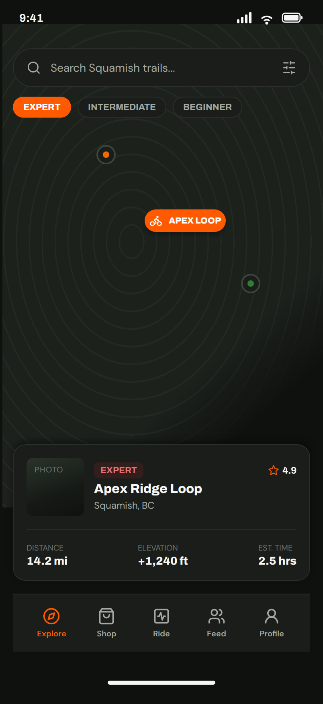
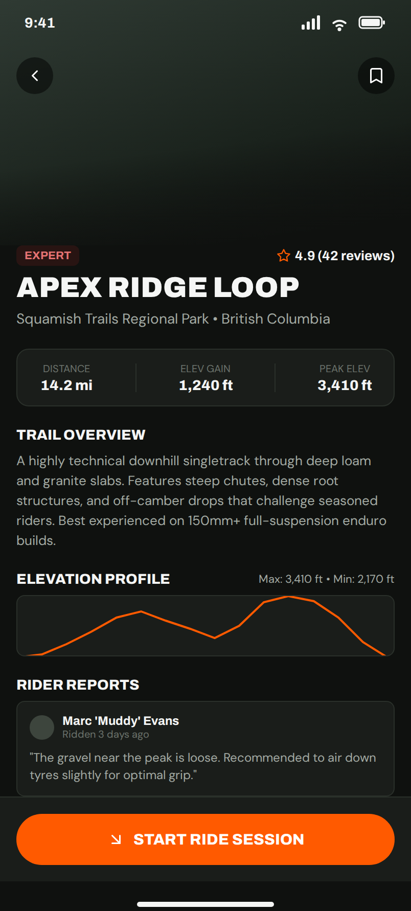

3. Trails and TrailDetail, from the map and the detail screen
No em dashes anywhere in this document or any copy it generates.

Two forms, Trails and TrailDetail, and one row form, TrailRow. Your architecture already has rp_trails with lbl_trail_name, lbl_difficulty and lbl_length; the design adds a location line, a rating, and a card to put them in. Your architecture also already made the decision this page depends on: the map is a list for now. Here is why that costs you almost nothing.
The map is a list
Look at the bottom of the map screen. Under the map there is a card: a thumbnail, an EXPERT badge, a rating, the trail name, where it is, and three numbers. That card is your row. The map above it is a picture of a place the card already describes. Take the map away and stack five of those cards and you have the Trails screen, and it has everything your story asks for: name, difficulty, and the length appears with the trail name.
The search bar and the three difficulty chips at the top can stay, and page 7 says what they cost. Start without them.
Trails: the top
| Name | Type | Text | Look |
|---|---|---|---|
lbl_title | Label | TRAILS | role display, 28, foreground On Surface |
rp_trails | RepeatingPanel | item template TrailRow |
That is the whole form. The work is in the row.
TrailRow
One ColumnPanel called card_trail, role card-big, with the thumbnail on the left and the words on the right. Drag the words next to the thumbnail rather than under it, and Anvil puts them in one row.
| Name | Type | Text | Look |
|---|---|---|---|
img_trail | Image | 72 by 72, optional. Your trails table has no photo column, so leave this out until it does. | |
lbl_difficulty | Label | EXPERT | role chip-expert when the difficulty is Expert, role chip otherwise. The code for that is below. |
lbl_rating | Label | 4.9 | icon fa:star in Primary, role strong, 12, align right. Optional: there is no ratings column either. |
lbl_trail_name | Label | Apex Ridge Loop | role strong, 16, foreground On Surface |
lbl_location | Label | Squamish, BC | 12, foreground #a3aaa3. Optional, and it needs a column. |
lbl_length_word | Label | DISTANCE | role eyebrow |
lbl_length | Label | 14.2 mi | role strong, 14, foreground On Surface |
The design shows three numbers across the bottom: distance, elevation and time. Your table has one of them, length. Show one. Two empty boxes next to a real one look worse than one real one on its own.
The row fills itself in __init__ from self.item, which is Pattern 9, and this is the one place the look depends on the data:
self.lbl_difficulty.text = self.item['difficulty'].upper()
if self.item['difficulty'] == 'Expert':
self.lbl_difficulty.role = 'chip-expert'
else:
self.lbl_difficulty.role = 'chip'Clicking the row opens the trail. A Label cannot be clicked, so either make lbl_trail_name a Link instead, or put a small Button in the row. The Link is closer to the design. Then Pattern 1 and 4, passing the row's trail along.
TrailDetail

The design's hero photo at the top is the same choice as page 2: an Image if the table has a photo, nothing if it does not. Below it, everything stacks down the page.
| Name | Type | Text | Look |
|---|---|---|---|
lnk_back | Link | Back | icon fa:chevron-left, foreground #a3aaa3 |
lbl_difficulty | Label | EXPERT | role chip-expert or chip, same code as the row |
lbl_rating | Label | 4.9 (42 reviews) | icon fa:star in Primary, role strong, 13, align right. Optional. |
lbl_name | Label | APEX RIDGE LOOP | role display, 28 |
lbl_location | Label | Squamish Trails Regional Park • British Columbia | 14, foreground #a3aaa3. Optional. |
card_stats | ColumnPanel | role card, one row, two things across | |
lbl_length_word | Label, inside | DISTANCE | role eyebrow, align center |
lbl_length | Label, inside | 14.2 mi | role strong, 14, align center |
lbl_improves_word | Label, inside | IMPROVES | role eyebrow, align center |
lbl_improves | Label, inside | Core, legs | role strong, 14, align center |
lbl_overview_word | Label | TRAIL OVERVIEW | role heading |
lbl_overview | Label | the description | 13, foreground #a3aaa3 |
lbl_reviews_word | Label | RIDER REPORTS | role heading |
rp_reviews | RepeatingPanel | item template ReviewRow |
lbl_improves is not in the Figma and it is in your story. Then I will be able to see the difficulty, reviews, and what the trail improves (core, legs, etc.) The design's stats panel has Distance, Elev Gain and Peak Elev, and your table has length and improves. Build what the table has. The designer's list on the README asks them to add it.
The overview needs a column. Your plan says descriptions of the trails made by bikers and your trails table has no description. Add one, description, text. Page 7 lists it with the other things to add to the architecture page.
The elevation profile is a drawn line. There is no component for it and the two numbers under it, max and min, are not in your table. Leave it out.
Start Ride Session at the bottom is the ride tracking feature, which has no story. Leave it off. A button that does nothing is a bug somebody will report.
ReviewRow
Your design brief said your architecture does not say what goes in each row. The Figma has now decided, and it is a good decision:
| Name | Type | Text | Look |
|---|---|---|---|
card_review | ColumnPanel | role card | |
lbl_reviewer | Label | Marc 'Muddy' Evans | icon fa:user-circle-o, bold, 12, foreground On Surface |
lbl_when | Label | Ridden 3 days ago | 10, foreground #6b726b |
lbl_review | Label | the review, in quotes | 12, foreground #a3aaa3 |
That needs a reviews table your architecture does not have: trail (a link to the trails row), reviewer, posted (date and time), text. Reading them for one trail is Pattern 8 with a condition, and Pattern 9 to show them.
The three states
- Empty. No trails yet:
rp_trailsshows nothing, and a Label under it that saysNo trails yet. Ask a rider to add one.which is visible only when the list is empty, Pattern 14. No reviews yet on a trail: the same,Nobody has reported on this trail yet. - Wrong. Nothing is typed on either screen, so nothing can be wrong.
- Full. A trail name of six words wraps onto two lines in the card and that is fine. A review that is a paragraph makes its card tall and that is also fine. Try both before you call the screen done.
The designer's layers on these frames
| Figma layer | Rename to |
|---|---|
trail-map (the frame) | Trails |
preview-card | rp_trails, and make it a component: it is the row |
trail-title | lbl_trail_name |
difficulty-badge | lbl_difficulty |
trail-location | lbl_location |
the first spec-val (14.2 mi) | lbl_length |
trail-thumbnail | img_trail |
topo-map-bg, the three markers | move to the Later page, with a note that the map comes back when there is a map service |
trail-detail (the frame) | TrailDetail |
btn-back | lnk_back |
title | lbl_name |
location | lbl_location |
overview-body | lbl_overview |
the stat with Elev Gain | lbl_improves, with the words changed to IMPROVES and Core, legs |
the stat with Peak Elev | delete |
review-card-0 | rp_reviews, and make it a component |
reviewer-name, review-time, review-text | lbl_reviewer, lbl_when, lbl_review |
elevation-profile-block | move to Later |
btn-start-ride | move to Later |
btn-save (the bookmark) | delete, or write the story for saving a trail |
The rest of this guide
- TrailRiders: from the Figma to Anvil
- 1. Colours, fonts, icons and roles: set once
- 2. SignIn, from the home screen
- 3. Trails and TrailDetail, from the map and the detail screen (you are here)
- 4. Shop, and NewListing which is not drawn yet
- 5. HealthAI, which nobody has drawn yet
- 6. theme.css, in one place
- 7. What not to chase, and what the Figma decided